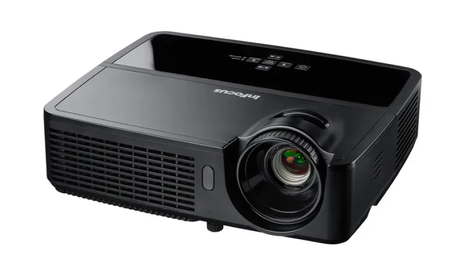

Серия Genesis
Проекторы начального уровня, предназначенные для использования в учебных учреждениях, в небольших переговорных комнатах и аудиториях. Компактные размеры и малый вес позволяют использовать проекторы InFocus Genesis в качестве удобного портативного решения, требующего лишь минимального обслуживания. А легкая настройка и элементарное подключение облегчают ежедневное использование проекторов в суете образовательного процесса. В серии Genesis также представлены бюджетные короткофокусные проекторы для классных комнат и небольших конференц-залов, позволяющие получать яркое изображение презентаций и учебных материалов без затенения в условиях естественного или искусственного освещения.